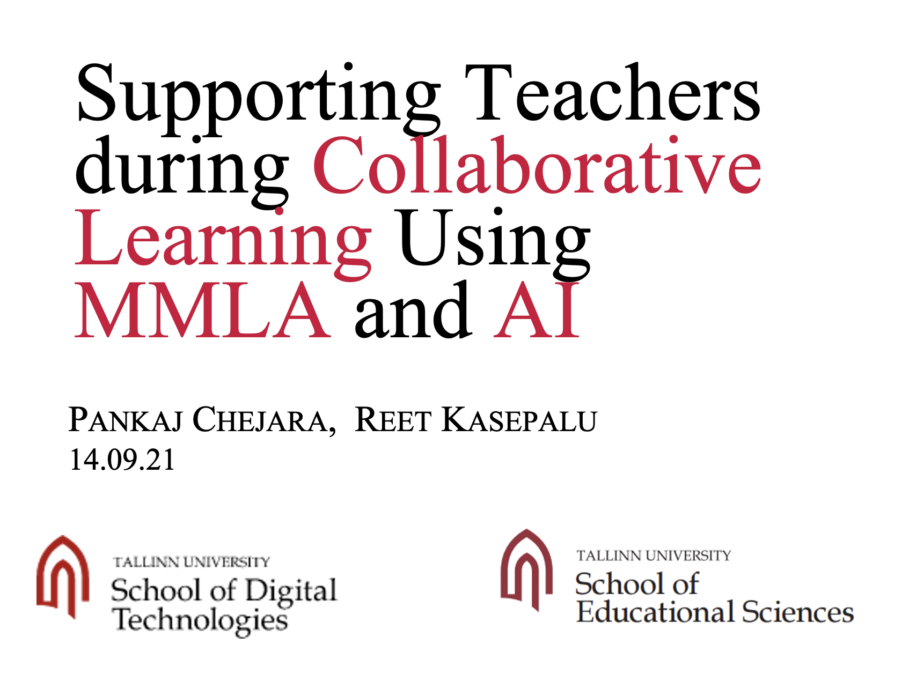

This talk was at the Hybrid Intelligence: Human-AI Collaboration and Learning workshop at 15th International Conference of Learning Analytics & Knowledge. In this talk, I presented three technological AI tools from Tallinn University as cases of human-AI hybrid intelligence from a complementarity point of view.
I gave this talk (remote) in a joint Learning Analytics course run by KTH Royal Institute of Technology and University of Bergen coordinated by Prof. Deniel Spikol. The talk shared current research in the area of multimodal collaboration analytics.
This talk was given to defend my PhD thesis on the topic of Classroom collaboration analytics: designing and building automated systems for collaboration monitoring in classroom settings at Tallinn University
This talk was given at the 14th International Conference of Learning Analytics & Knowledge to present results from the evaluation of CoTrack (a multimodal learning analytics tool), also published in the form of a conference paper.
This talk was given at the European conference of technology-enhanced learning to present results from a research study exploring relationships between multimodal data and collaboration quality.
This talk presented a research paper at the 14th International Conference of Learning Analytics & Knowledge organized at Arizona State University, Arizona. The paper included results from a study exploring methodologies to build generalizable collaboration prediction models for authentic classroom settings.
This talk presented a research paper at the 14th International Conference of Learning Analytics & Knowledge organized at Arizona State University, Arizona. The paper included results from a study investigating impact of using different temporal window sizes for feature aggregation on the performance of collaboration prediction models for authentic classroom settings.
This talk was given during my research stay at the GSIC-EMIC research lab at the University of Valladolid, Spain to introduce my research on Multimodal Learning Analytics to explore collaboration analytics. The talk was attended by most of the lab members including Prof. Yannis Dimitriadis, Prof. Alejandra Martínez Monés, and Prof. Juan Ignacio Asensio Pérez.
This talk was given during my research stay at the SLATE research group at the University of Bergen, Norway. The talk presented research work on building automated systems to support teachers during collaborative learning activities in classrooms.

This talk was given at Tampere University in Finland during a short research visit. In this talk, I presented my research on the potential of Multimodal Learning Analytics to support teachers in collaborative learning activities with monitoring.
No matching items